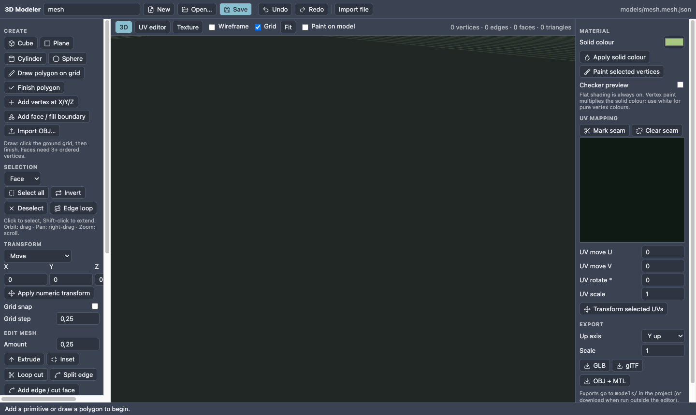
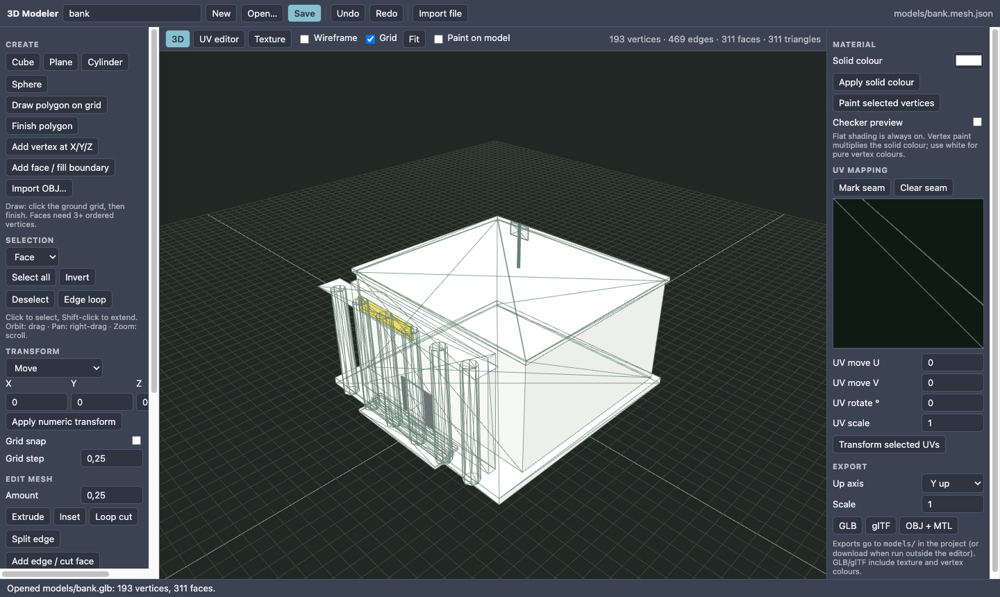
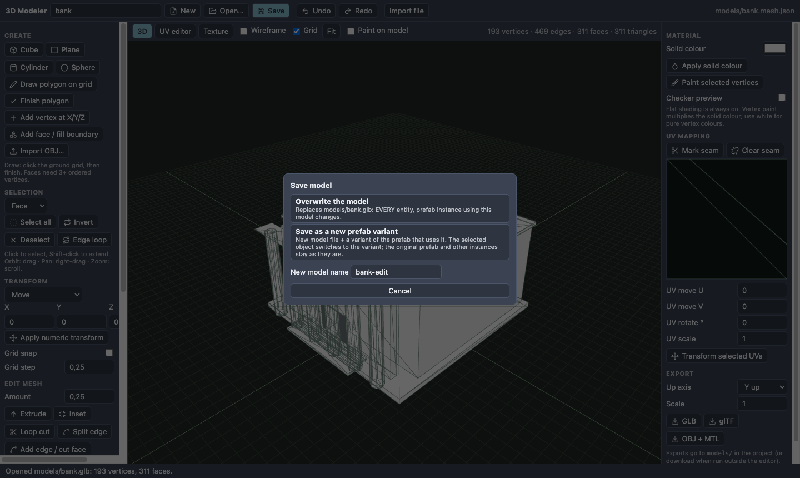
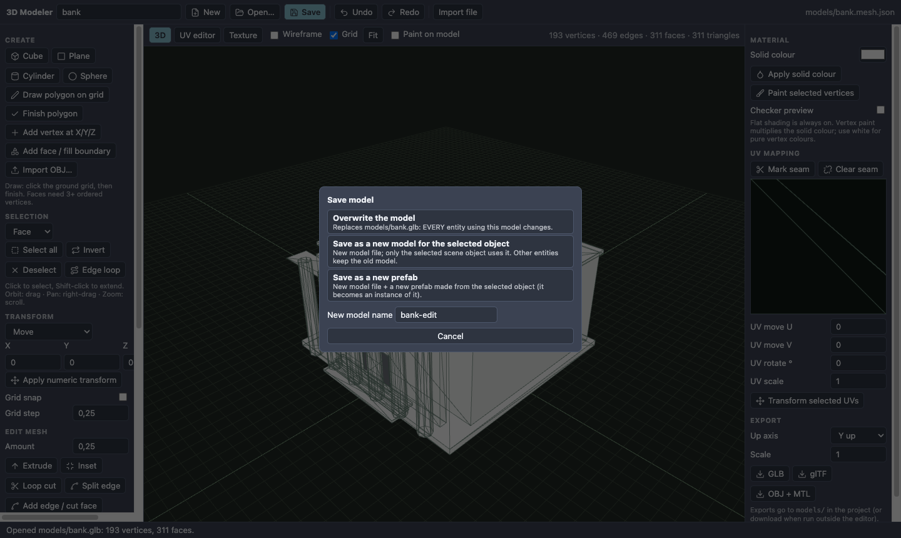
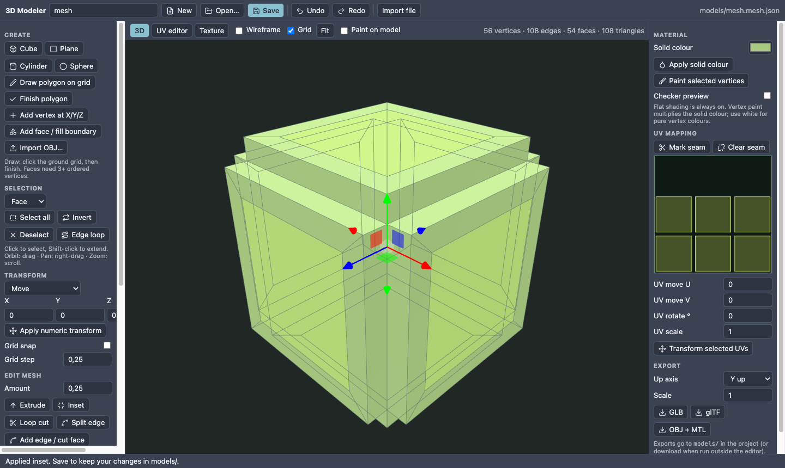
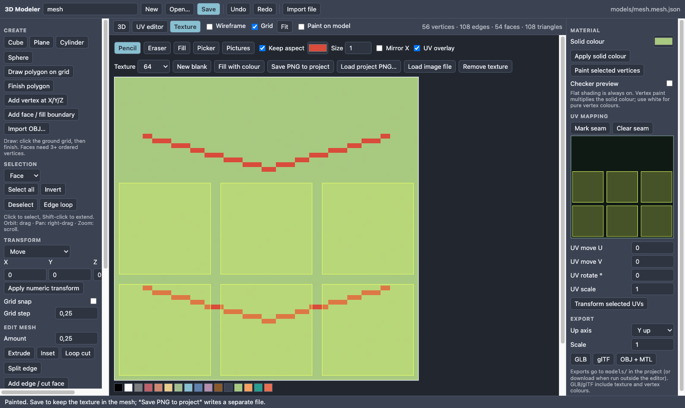
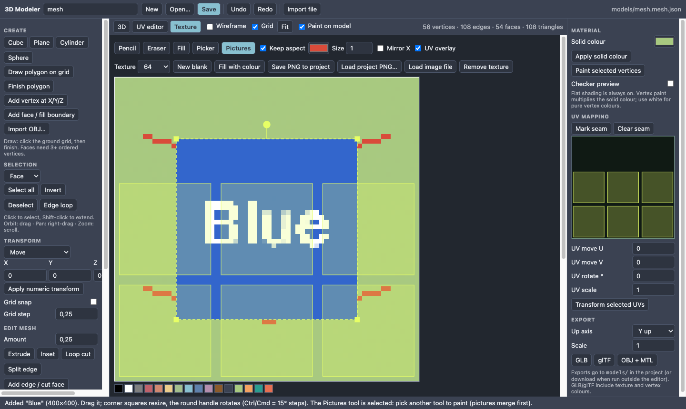
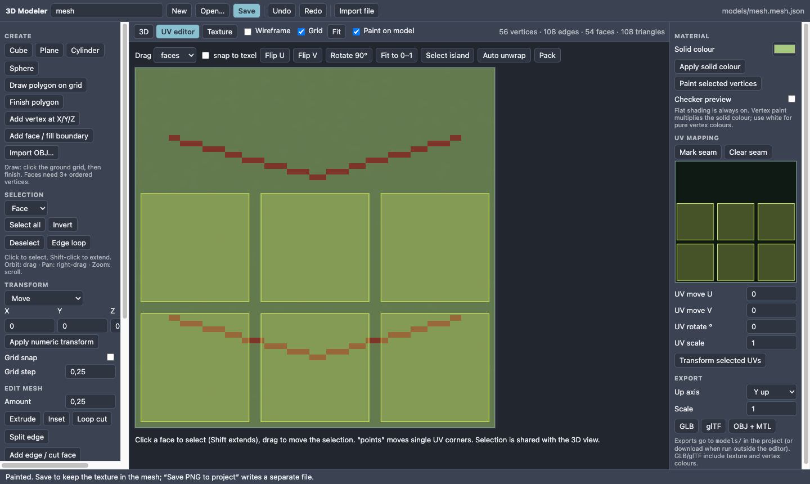

3D Modeler
The 3D Modeler tab (Window ▸ Editors ▸ 3D Modeler) is for props and small fixes: build a crate from a cube, nudge vertices, repaint a texture, fix a UV, change a model that is already in your scene. It is not a replacement for Blender. Everything is saved in the project's models/ folder.

Save your model and use it in the game (3 steps)#
Everything the Modeler saves goes into the project's models/ folder (next to assets/, scenes/, scripts/).
Name it and press Save (name box at the top left, or Ctrl/Cmd+S). Save writes two files and the status line at the bottom tells you which:
File What it is Use it for models/<name>.glbthe game-ready model: shape, UVs, texture and colours in one file put this in your game models/<name>.mesh.jsonthe editable model open it again in the Modeler to keep working models/<name>.pngthe texture alone (only if you press Save PNG to project) other tools Put it in the scene. Any of these:
- Open the Assets tab, click the
modelsfolder, and drag<name>.glbinto the Scene view (or onto the Hierarchy). A model object appears at that spot. - Select an object, Inspector ▸ + Add component ▸ Model, and set Path to
models/<name>.glb(the picker lists it). - Dragging the
<name>.mesh.jsoninstead also works: Nord uses the.glbnext to it. If there is no.glbyet it opens the Modeler on that mesh: press Save there to make it.
- Open the Assets tab, click the
Press Play. Your model is in the game with its texture. Export/build includes the
models/folder automatically.
Continue editing later (after closing or restarting)#
Your work is safe once you pressed Save (check the status line for the file names). To continue:
- Assets tab ▸
models▸ double-click<name>.mesh.json, or right-click it ▸ Open in 3D Modeler. - In the Modeler: Open… lists every
.mesh.json(editable) and.glbinmodels/. - From a scene object: Inspector ▸ MODEL ▸ ✎ Open in 3D Modeler (see below).
The Modeler also keeps a draft of the current model inside its web view, but that only survives while the editor keeps its web storage (by default it does not), so always press Save before you close the editor.
Where the files live (and why models/)#
models/ in the project root is the Modeler's folder: the editor's safe save API writes only to a few project folders and models/ is one of them, the asset index and the model picker read it, and builds copy it. Move or rename files in the Assets tab if you prefer another folder (for example assets/models/): scene objects keep working when you re-pick the path, and colours/tags you set on assets follow renames.
Export (GLB, glTF, OBJ, PNG) for other tools#
For your Nord game you do not need Export: Save already writes the game-ready models/<name>.glb. Use the Export buttons (right panel, bottom) when you want the model in another program (Blender, Unity, Godot, a 3D printer slicer…), in another format, or with another size or axis.
- Name the model (top left).
- In the right panel, Export section, set:
- Up axis: Y up (the normal for Nord, Unity, Godot, glTF) or Z up (baked) (Blender, 3D printing: the vertices are rotated into the file).
- Scale: a factor applied to every coordinate (for example
0.01for centimetres to metres,100for the opposite). Nord models are in metres-like units.
- Press one of the buttons. The files go to the project's
models/folder (outside the editor, in a browser, they download instead), and the status line names them:
| Button | Files written | Contains | Good for |
|---|---|---|---|
| GLB | models/<name>.glb |
shape, UVs, texture, vertex colours, in one binary file | Nord, Blender, Unity, Godot, web viewers: the best choice |
| glTF | models/<name>.gltf |
the same as JSON text (texture and data embedded) | when you need a readable file or want to diff it in Git |
| OBJ + MTL | models/<name>.obj, <name>.mtl and <name>.png (the texture, if there is one) |
geometry, UVs, a material that points to the PNG, vertex colours as extra numbers on the v lines |
old tools, simple importers, Blender (import OBJ) |
| Save PNG to project (Texture tab) | models/<name>.png |
the texture alone, with your painted pixels and pictures merged | editing the texture in an image program, or reusing it on another model |
What is not exported: skeletons and animations (the Modeler has none), and more than one texture or material per model (one texture per mesh). Faces are exported flat-shaded (hard edges), as they look in the Modeler.
Use an exported file in Nord: a .glb or .gltf in models/ (or assets/) works like the Saved one: drag it into the scene or set a model component's Path. Bring a model from another program in: put its .glb in models/, then Open… (the list shows .glb files) imports it into the Modeler as one mesh (first texture kept, see Opening a scene model), or Import OBJ… (Create section, left panel) for an OBJ.
Export a model you opened from a scene object: the save choices (overwrite / new / prefab / variant) already write the game .glb; Export is still available if you want the other formats.
Open a model from your scene#
Three ways, all do the same:
- Inspector button. Select the object in the Hierarchy (or click it in the Scene view). In the Inspector scroll to the MODEL component and press ✎ Open in 3D Modeler under its fields.
- Hierarchy. Right-click the object ▸ Open model in 3D Modeler (only shown when the object has a model).
- Assets tab. Select a
.glb/.gltffile, then press Open in 3D Modeler in the Inspector. No scene object is attached, so Save can only write a new file.
(The MODEL header's ⋮ menu has the same command.) The Modeler tab comes to the front, showing the model as it is. The top bar says Editing models/x.glb; Detach there cuts the link to the scene object.
Edit a built-in shape (mesh) as a model#
Objects like Neon Harbor's towers use a MESH component (box, sphere, cylinder, capsule, plane/ground, torus + size) instead of a model file, so there is no file to open. Turn one into a model:
- Select the object. In the Inspector, MESH component, press Edit as model in 3D Modeler.
- The Modeler opens with that shape as editable geometry, in the right size. Shape it, paint a texture.
- Press Save and choose Save as a new model for the selected object (or Save as a new prefab). The object's MESH component is replaced by a MODEL component that points at the new
.glb. - Nothing is changed until you save. Close the tab or never press Save and the object keeps its mesh exactly as it was.
Notes: a capsule opens as a cylinder; the number of sides follows the Modeler's primitives, not the component's segments; the mesh's material component stays on the object (the model brings its own colours and texture), remove it if you do not want it.
Quick tasks (step by step)#
Make a model from nothing. Press New, type a name in the box at the top, click Cube. Move/shape it (below), open the Texture tab and paint, then press Save (it writes the game-ready models/<name>.glb too). Full lesson: T49.
Select something. Choose Face, Edge or Vertex in the Selection box, then click in the 3D view. Shift-click adds more. Select all / Deselect / Invert are in the same panel.
Move, rotate or scale a selection. Select it, then drag the coloured arrows of the gizmo in the view, or type numbers in X / Y / Z, pick Move / Rotate / Scale and press Apply numeric transform. Turn on Grid snap to move in steps of Grid step.
Make a part bigger or add a bump. Select a face, set Amount (for example 0.3) and press Extrude. A negative Amount pushes in.
Make a window or a panel. Select a face, Inset (Amount 0.2), then Extrude with -0.1.
Add detail across a wall. Edge mode, select one edge of the wall, press Loop cut: a new ring of edges appears. Move it with the gizmo.
Make it symmetric. Move half of the model away from the centre plane, press Mirror X (or Y / Z). The copy is welded on.
Put it on the floor. Center on ground.
Change the colour of the whole model. Pick a colour in Solid colour (right panel), press Apply solid colour. A part only: select its vertices, pick a colour, Paint selected vertices.
Paint the texture. Open the Texture tab. If the model has no texture yet press New blank (size 32 or 64 is plenty). Choose Pencil, pick a colour, drag on the picture. Fill floods an area, Picker copies a colour, Eraser removes. Tick UV overlay to see where each face sits.
Paint straight on the model. In the 3D tab tick Paint on model, pick the tool/colour in the Texture tab, then drag on the model. Untick it to select faces again.
Fix a face that shows the wrong part of the texture. Open UV editor, click the face, drag it to the right spot. Flip U / V or Rotate 90° if mirrored/turned. If everything is a mess: Auto unwrap, then Pack.
Change a model in the scene and keep the others. Open it from the scene (above), edit, press Save, choose Save as a new model for the selected object, type a name, confirm. Only the selected object now uses it. Lesson: T54.
Change a model everywhere. Same, but choose Overwrite the model. Every object and prefab that uses the file changes.
Make a new prefab / prefab variant. Save ▸ Save as a new prefab (plain object) or Save as a new prefab variant (prefab instance).
Undo a mistake. Ctrl/Cmd+Z, or Undo. Shift+Ctrl/Cmd+Z redoes.
Opening a scene model, and what survives#
Opening a .glb / .gltf merges all its meshes into one editable mesh (node transforms applied, duplicate points welded). You get the geometry, the UVs, the first texture and the material colours.

Saving a scene model: overwrite, new, prefab, variant#
When the Modeler was opened from the editor, Save asks what to do, so you never change other things by accident:

| Choice | Offered when | What happens |
|---|---|---|
| Overwrite the model | the file is in models/ |
The .glb is replaced. Every entity and prefab that uses the file changes. |
| Save as a new model for the selected object | plain scene object | A new .glb is written; only the selected object's model → Path is switched to it. |
| Save as a new prefab | plain scene object | New .glb + a new prefab made from the selected object; the object becomes an instance of it. |
| Save as a new prefab variant | the object is a prefab instance | New .glb + a variant of the prefab with the new model; the selected instance switches to the variant. The original prefab and other instances stay. |
| Save as a new model file | opened from an asset (no scene object) | Writes a new file in models/; the scene is unchanged. |

New files get a free name (name-edit, name-edit-2...). A model that lives outside models/ (for example inside an asset pack) cannot be overwritten, only saved as a new file. Afterwards the Modeler stays tied to the new file/prefab, so another Save continues from there. Detach (top of the tab) forgets the scene object for free modelling. Next to the .glb, a .mesh.json is saved so you can continue editing without re-importing.
3D view tools#

Navigation: orbit = left mouse drag, pan = right drag, zoom = wheel, Fit frames the mesh. Wireframe, Grid and Paint on model are toggles in the bar above the view. Shortcuts: Ctrl/Cmd+Z undo, Shift+Ctrl/Cmd+Z redo, Delete removes the selection, Ctrl/Cmd+S saves.
Create#
| Tool | Does |
|---|---|
| Cube / Plane / Cylinder / Sphere | Adds a primitive with UVs (it is selected, ready to move). |
| Draw polygon on grid + Finish polygon | Click ordered points on the ground grid, then Finish to make one face (3+ points). |
| Add vertex at X/Y/Z | Adds a single point at the numbers in the Transform fields. |
| Add face / fill boundary | Makes a face from selected vertices in order, or fills a hole bounded by selected edges. |
| Import OBJ… | Loads a Wavefront file (UVs kept or auto-unwrapped; no textures). |
Selection#
Mode box: Face / Edge / Vertex. Click selects, Shift-click extends. Select all, Invert, Deselect, Edge loop (extends an edge selection along a regular quad ring).
Transform#
Drag the gizmo, or type X/Y/Z, choose Move / Rotate (degrees) / Scale and press Apply numeric transform. Grid snap + Grid step snap moves.
Edit mesh (uses the Amount field)#
| Tool | Does |
|---|---|
| Extrude | Pushes selected faces out (negative Amount = in). |
| Inset | Shrinks selected faces into a smaller face with a border. |
| Loop cut | Adds a ring of edges across a face strip. |
| Split edge | Edge mode: puts a new vertex in the middle of each selected edge. |
| Add edge / cut face | Vertex mode: select two non-adjacent vertices of one polygon, then press: the polygon is cut in two along that line. |
| Detach faces | Separates selected faces from their neighbours. |
| Merge vertices / Weld | Merge = selected points into one; Weld = all points closer than Amount. |
| Optimize | Welds points that coincide (1e-5) and removes points no face uses. |
| Delete | Deletes selected faces/edges/vertices. |
| Flip normal | Turns a face inside out. |
| Triangulate | Splits n-gons into triangles. |
| Face bevel | Like Extrude, but the new faces are bevelled (chamfered) by Amount. |
| Subdivide all | Splits every face into quads. |
| Mirror X/Y/Z | Duplicates the mesh across that origin plane and welds the seam (move the half away from the plane first). |
| Center on ground | Moves the mesh so it is centred with its bottom on y = 0. |
Material, UV mapping, export (right panel)#
- Solid colour + Apply solid colour sets the base colour. Paint selected vertices stores the colour box's colour as the vertex colour of the selected points (it multiplies with the solid colour and texture; white = no tint). Checker preview shows a test pattern to judge UV stretching.
- UV mapping: Mark seam / Clear seam (edge mode) cut islands; UV move U/V, rotate, scale + Transform selected UVs change the UVs of selected faces numerically.
- Export: only needed for other tools or a different scale / axis: Up axis (Y up, or Z up baked), Scale, then GLB, glTF or OBJ + MTL into
models/. For your game, Save is enough: it already writes the.glb(Y up, scale 1).
Full window#
Full window (top of the Modeler tab) makes the 3D Modeler fill the whole Nord Engine window; menus and panels are hidden. The red ✕ Exit full view button in the same place brings the normal layout back.
Texture tab#

A pixel painter for the model's texture. Pencil, Eraser, Fill (flood fill), Picker (take a colour from the image); colour box + swatches; Size (brush); Mirror X; UV overlay shows where faces are. Texture size 16-512 px. New blank (fills with the colour), Fill with colour, Load image file / Load project PNG… (replace), Save PNG to project, Remove texture. A texture of a scene model is shown at its own size (up to 1024 px).
Picture layers: add PNGs and arrange them#
The model always has one texture. Picture layers let you put pictures (PNG, JPG, WebP) on it and move them around like stickers; when you are done they are merged into that one texture, so ten pictures never mean ten files or a 100 MB model.

- Open the Texture tab. Press + Add pictures… (select several files at once), or drop files on the texture, or paste an image with Ctrl/Cmd+V, or + From project… for PNGs in
models/. - The Pictures tool (next to Picker) is selected automatically when you add a picture; to get back to it later press its button, or double-click the texture. Click a picture to select it (yellow dashed box). Drag to move; drag a corner square to resize; drag the round handle to rotate. Resizing keeps the proportions while Keep aspect (in the tool bar) is ticked; hold Shift to flip that for one drag (or untick it to stretch freely). Rotation snaps: Ctrl/Cmd = 15° steps, Shift = 45°, Alt = 1°. Arrow keys nudge 1 px (Shift 8 px), Delete removes, Ctrl/Cmd+D duplicates.
- Under the texture: the layer list (thumbnail, name, Hide/Show) and the properties of the selected layer:
- X / Y / Width / Height / Rotate / Opacity %, keep proportions, Flip horizontal / vertical, Smooth (off = crisp pixels, on = soft edges).
- Cut: Cut Left / Top / Right / Bottom crop the picture (in picture pixels). Trim transparent removes empty edges.
- Stacking (which picture is on top): the list shows the top picture first. Use the small ▲ / ▼ on a row to move that picture up or down one step, or the buttons Forward, Backward, To front, To back. Keys: Ctrl/Cmd+] forward, Ctrl/Cmd+[ backward, add Shift for front / back. A picture hidden under another? Click its row in the list, or Alt+click the texture to pick the picture underneath (repeat to cycle).
- Mask (keep inside UV area): a big picture no longer spills onto the neighbouring UV boxes. Choose Selected faces (select faces in the 3D or UV tab first), Face under the picture centre, or All faces; the picture is then drawn only inside those UV areas. No mask removes it.
- Blend: Normal, Multiply (tint / darken), Screen, Overlay, Soft light, Darken, Lighten, Colour only: for dirt, shadows, colour washes.
- Buttons: Duplicate, Delete, Forward, Backward, To front, To back, Center, Fill texture, Original size.
- Fit to selected faces: select faces in the 3D or UV tab first, then the picture is placed exactly over their UV area. This is the fastest way to texture a wall with a picture.
- Remove painted colour: makes the colour of the colour box transparent in this picture (with a tolerance), handy for white backgrounds.
- Pictures are merged into the texture when you press Merge … layers into texture, when you paint with any other tool, and automatically when you save or export. After merging they are normal pixels (use Undo to get the layers back, one step).
Smooth or pixelated: pictures are smooth by default and a small texture is stepped up to 512×512 when you add the first picture, so photos do not turn into a few big pixels (a 64×64 texture can only hold 64 pixels across). For a pixel-art look tick Pixelated look (texture view and model use hard pixels, remembered) and untick Smooth on a picture; shrink the texture with the size menu if you want chunkier pixels.
Keeping it small:
- Big pictures are shrunk to 512 px on import; Shrink data resamples a picture to its size on the texture.
- The size menu next to the buttons resizes the whole texture (16 to 1024) and scales everything with it (a non-square texture, for example one loaded from a photo, is shown with its real proportions and can be made square from the same menu). The line next to it shows the PNG size, in red when it is over 2 MB.
- Compress: light / medium / strong reduces colours (6 / 5 / 4 bits per channel) when you save, which makes the PNG much smaller; it suits flat, game-like art.
- Limits: 64 layers at a time; texture up to 1024×1024.
Paint on model#
Tick Paint on model in the top bar and drag on the model in the 3D view: the pixels under the brush change. Same colour, size and tool as the Texture tab.

UV editor tab#
Click a face to select it (Shift extends), drag to move it; switch Drag to points to move single corners; snap to texel snaps to texture pixels. Buttons: Flip U / V, Rotate 90°, Fit to 0-1, Select island, Auto unwrap (project each face), Pack (arrange all on the texture without overlap).
Limits#
One texture per mesh. Flat shading only. No skeleton/animation authoring or import. Undo keeps whole-mesh snapshots (80 steps / 32 MB). A draft is kept in the browser (nord.mesh-draft). Outside the editor (Open in browser) Save downloads files and the save dialog cannot change scene objects. The Scene view picks up an overwritten model after a reload.
Lights and shadows on your model#
A model from the Modeler needs no extra component to be lit: it is an ordinary model, so every light in the scene lights it, and it casts and receives shadows like any mesh. If a point light seems to do nothing, check these in order:
- The light has a
range(default 10) and the model is inside it. The light fades out linearly to nothing atrange. Put the light closer, or raiserange(andintensity). - Shadows: tick
castShadowson the light (a point light shadows in all directions), and look at a surface behind the model: a shadow needs a floor or wall to fall on. The model casts and receives shadows by default. - It is not an unlit material. Materials set to
unlit, or very strongemissivecolours, do not change with light. A Modeler texture is a normal lit colour texture, so it reacts. - Too many lights: if more than Lights per object (Project ▸ Quality) reach the model, the weakest are dropped from it. See Many lights in the 3D chapter.
- Scene view: the Scene view shows the scene's own lights only with Gizmos ▸ Scene lighting on; with it off, you see neutral editor light.
- The light is enabled (its entity checkbox) and Ambient light is not hiding the effect: a bright ambient makes a point light hard to see, so lower
ambientIntensityto compare.